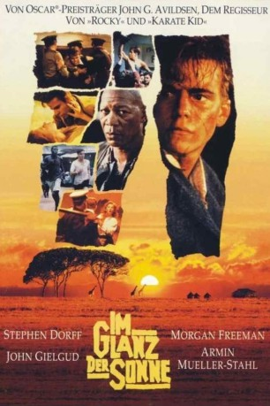
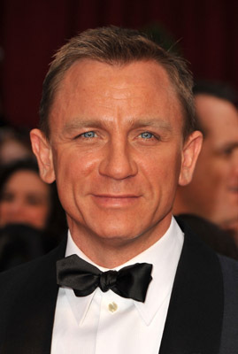

#12199 Im Glanz der Sonne
Alternativ: The Power of One (Englischer Titel)
 
 IMDB-Wertung: 7.2 / 10
IMDB-Wertung: 7.2 / 10  Tomatometer: 39
Tomatometer: 39  Metascore: 0
Metascore: 0 
P. K. wächst als Engländer in Südafrika auf und bekommt dort schon früh die Auswirkungen des Rassismus zu spüren. Nach dem Tod seiner Eltern nimmt ihn der deutsche Professor von Vollensteen unter seine Fittiche. Zu Beginn des Zweiten Weltkrieges weigert sich dieser, sich als Ausländer zu melden, und wird deshalb ins Gefängnis gesteckt. P. K. besucht seinen Ziehvater dort und lernt so den schwarzen Gefangenen Geel Piet kennen, der ihm das Boxen beibringt. Als der Krieg vorbei ist, geht P. K. wieder zur Schule und hält dort am Boxsport fest. Bei einem seiner Kämpfe trifft er Maria in die er sich verliebt. Ihr Vater ist als Führer der Nationalistischen Partei Südafrikas von dieser Verbindung allerdings wenig begeistert. Dennoch kann P. K. Maria dazu überreden, mit ihm und seinem Freund Guideon die Afrikaner der Townships in Englisch zu unterrichten. Bei einem der heimlichen Treffen kommt es jedoch zu einer Katastrophe...
Jahr: 1992
Dauer: 127 Minuten
FSK: 12
Land: Australien Studio: Warner Home VideoTonspuren: DD2.0 - ,
Untertitel:
Auflösung: 1080p (1920x1040) Größe: 10240 MB
Genre: Drama, Sport
Regisseur:  John G. Avildsen
John G. Avildsen
Drehbuch: Bryce Courtenay, Robert Mark Kamen
Soundtrack: Hans Zimmer
Darsteller:
- Tracy Brooks Swope als Mother
- Guy Witcher als P.K. Age 7
- John Turner als Afrikaner Minister
 Armin Mueller-Stahl als Doc
Armin Mueller-Stahl als Doc Clive Russell als Sgt. Bormann
Clive Russell als Sgt. Bormann Morgan Freeman als Geel Piet
Morgan Freeman als Geel Piet- Simon Fenton als P.K. Age 12
- Winston Ntshona als Mlungisi
 John Gielgud als St. John
John Gielgud als St. John Stephen Dorff als P.K. Age 18
Stephen Dorff als P.K. Age 18 Fay Masterson als Maria
Fay Masterson als Maria- Alois Moyo als Gideon Duma
- Adam Fogerty als Andress Malan
 Marius Weyers als Prof. Daniel Marais
Marius Weyers als Prof. Daniel Marais-  Daniel Craig als Sgt. Botha
- Faith Edwards als Miriam Sisulu
- Lungani Sibanda als Student
- Joel Phiri als Student
- Christien Anholt als Date at Dinner
- Nigel Pegram als Man Guest #1
- Nick Cagle als Voice Performer (uncredited)
- Nomadlozi Kubheka als Nanny
- Agatha Hurle als Midwife
- Nigel Ivy als P.K. Newborn
- Brendan Deary als P.K. Infant
- Winston Mangwarara als Tonderai Infant
- Tonderai Masenda als Tonderai
- Cecil Zilla Mamanzi als Ranch Foreman
- Robbie Bulloch als Jaapie Botha
- Gordon Arnell als Minister at Mother's Funeral
- Jeremiah Mnisi als Dabula Manzi
- Paul Tingay als Grandfather
- Hywell Williams als Captain
- Michael Brunner als Cmdt. Van Zy
- Gert van Niekerk als Lt. Smit
- Ed Beeten als Prison Commissioner
- Dominic Walker als Morrie Gilbert
- Robert Thomas Reed als School Fight Opponent
- Roy Francis als Referee
- Clare Cobbold als Maria's Friend #1
- Natalie Morse als Maria's Friend #2
- John Osborne als Guard, School Gate
- Simon Shumba als Man Without Pass
- Stan Leih als Van Cop #1
- Rod Campbell als Van Cop #2
- Ian Roberts als Hoppie Gruenewald
- Tony Denham als Boxing Partner
- Eric Nobbs als City Cop #1
- Edward Jordan als City Cop #2
- Brian O'Shaughnessy als Col. Bretyn
Datei: X:\1992\Im Glanz der Sonne (1992, FSK12, 1920x1040).mkv seit 30.12.2019
Festplatte: Gemischt-01+Anime
 Es gibt insgesamt 57 Filme in der Gruppe '1992'
Es gibt insgesamt 57 Filme in der Gruppe '1992'